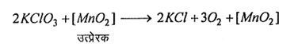
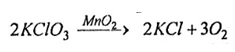
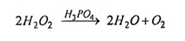
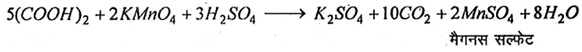

Q.18 : उत्प्रेरक पर निबंध लिखिए।
उत्तर- उत्प्रेरक - वे पदार्थ जो अपनी उपस्थिति मात्र से रासायनिक अभिक्रिया की गति में परिवर्तन (तीव्र अथवा मंद) कर देते हैं तथा उन पदार्थों के स्वयं के रासायनिक संघटन तथा भार में कोई परिवर्तन नहीं आता है, उत्प्रेरक (catalyst) कहलाते हैं तथा यह घटना उत्प्रेरण (catalysis) कहलाती है। उदाहरण के लिए, KCIO3 का विघटन।

उत्प्रेरक उत्प्रेरक के प्रकार - उत्प्रेरक निम्नलिखित प्रकार के होते हैं -
(i) धनात्मक उत्प्रेरक (Positive Catalyst)- जब कोई पदार्थ किसी अभिक्रिया के वेग को बढ़ा देता है, तो इस उत्प्रेरक को धनात्मक उत्प्रेरक और अभिक्रिया के वेग में वृद्धि होने को धनात्मक उत्प्रेरण कहते हैं।
उदाहरण – KCIO3 में MnO2 मिलाकर गरम करने पर ऑक्सीजन गैस कम ताप पर ही तीव्रता से उत्पन्न होने लगती है। MnO2 यहाँ धनात्मक उत्प्रेरक का कार्य करता है।

(ii) ऋणात्मक उत्प्रेरक (Negative Catalyst)- ऐसे पदार्थ जो किसी रासायनिक अभिक्रिया की गति को मंद कर देते हैं, ऋणात्मक उत्प्रेरक कहलाते हैं और अभिक्रिया का वेग मंद होने की क्रिया को ऋणात्मक उत्प्रेरण कहते हैं।
उदाहरण - हाइड्रोजन परऑक्साइड का अपघटन रोकने के लिए इसमें फॉस्फोरिक अम्ल डालते हैं जिससे अपघटन की क्रिया मंद हो जाती है। फॉस्फोरिक अम्ल यहाँ ऋणात्मक उत्प्रेरक का कार्य करता है।

(iii) स्वउत्प्रेरक (Autocatalyst)- कभी-कभी ऐसा होता है कि अभिकारकों के बीच अभिक्रिया से बना कोई पदार्थ उस अभिक्रिया के लिए उत्प्रेरक का कार्य करने लगता है। ऐसे पदार्थों को स्वउत्प्रेरक और अभिक्रिया को स्वउत्प्रेरण कहते हैं।
उदाहरण – ऑक्सैलिक अम्ल और अम्लीय KMnO2के विलयनों के बीच क्रिया होने पर पहले KMnO4 विलयन का रंग धीरे-धीरे लुप्त होता है, किन्तु बाद में शीघ्रता से लुप्त होने लगता है, क्योंकि अभिक्रिया में बना MnSO4 इस अभिक्रिया को उत्प्रेरित कर देता है।

(iv) प्रेरित उत्प्रेरक (Induced Catalyst)- जब एक रासायनिक अभिक्रिया किसी दूसरी अभिक्रिया के लिए उत्प्रेरक का कार्य करती है तो इसे प्रेरित उत्प्रेरण कहते हैं, जैसे – HgCl2 व ऑक्सैलिक अम्ल की क्रिया मंद गति से होती है और अम्लीय KMnO4 व ऑक्सैलिक अम्ल के बीच तीव्र गति से क्रिया होती है, किन्तु जब HgCl2 व ऑक्सैलिक अम्ल के मिश्रण में अम्लीय KMnO4 मिला देते हैं तब HgCI2 का अवक्षेप शीघ्रता से बनता है। यहाँ KMnO4 व ऑक्सैलिक अम्ल की क्रिया, HgC2 व ऑक्सैलिक अम्ल की क्रिया के लिए उत्प्रेरक का कार्य करती है।